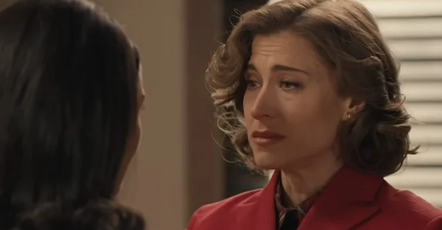
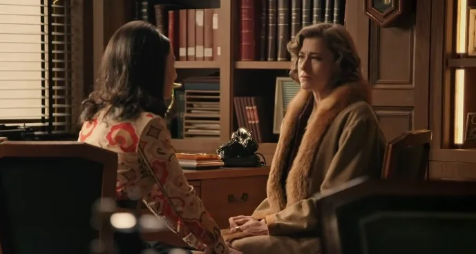
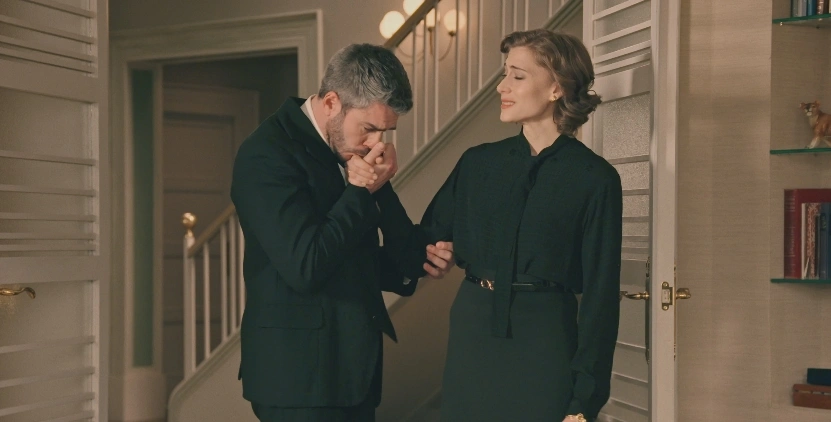
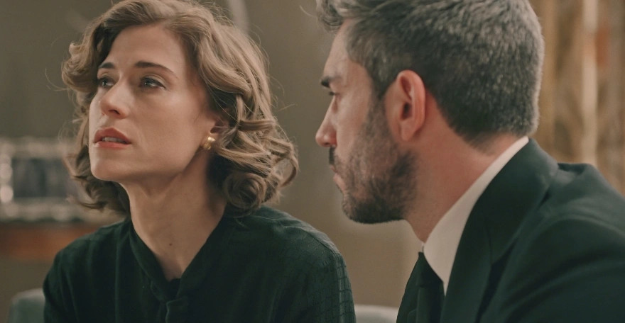
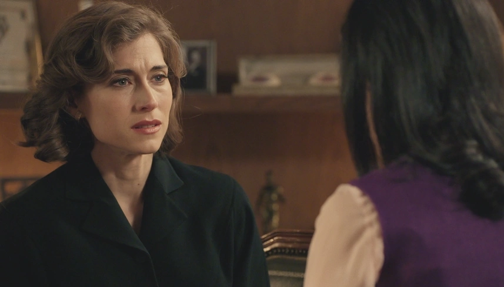
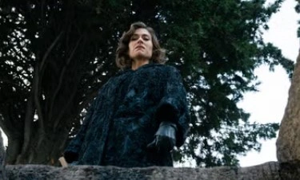

| 478 |
|
Mafin en la nueva cabecera ❤︎ |
Enero 16, 2026 |
| 487 |
 |
Marta cuenta a Digna sobre su relación con Cloe: "No me olvido de Fina" |
Enero 29, 2026 |
| 487 |
|
Marta dice a Cloe que le contó sobre ellas a Digna: "porque adoraba a Fina, Marta, pero a mí me odia" |
Enero 29, 2026 |
| 515 |
 |
Marta recuerda a Fina al hablar con Digna sobre su boda |
Marzo 10, 2026 |
| 516 |
|
Marta recuerda a Fina cuando Cloe le habla de su boda |
Marzo 11, 2026 |
| 517 |
 |
Marta sigue enamorada de Fina y le cuenta su noche de bodas |
Marzo 12, 2026 |
| 521 |
 |
“No sé si soy capaz de darte más de mí misma sabiendo que Fina está en alguna parte de este mundo” |
Marzo 18, 2026 |
| 523 |
 |
El recuerdo de Fina es tan fuerte que acaba el picnic de Marta y Cloe |
Marzo 20, 2026 |
| 523 |
 |
Marta y Cloe llegan a un final definitivo |
Marzo 20, 2026 |
| 524 |
|
Marta se refugia en Andrés tras su ruptura |
Marzo 23, 2026 |
| 532 |
 |
Pelayo está de regreso y Marta le asegura que no ha olvidado a Fina |
Abril 02, 2026 |
| 540 |
 |
Marta reconoce las siglas de Fina en un períodico de México y le deja un mensaje |
Abril 15, 2026 |
| 542 |
 |
Pelayo muere en los brazos de Marta pidiendo disculpas |
Abril 17, 2026 |
| 543 |
 |
Marta siente que trae sufrimiento a la gente que la quiere, Andrés la consuela |
Abril 20, 2026 |
| 544 |
 |
Marta cuenta a Andrés sobre Frina y el períodico. Él le propone volver a dejarle un mensaje. |
Abril 21, 2026 |
| 545 |
 |
Marta y el destino "el hilo del que tirar para encontrarla" |
Abril 22, 2026 |
| 546 |
 |
Darío cuenta finalmente a Marta que Pelayo amenazó a Fina |
Abril 23, 2026 |
| 547 |
 |
El funeral de Pelayo: "Púdrete" |
Abril 24, 2026 |